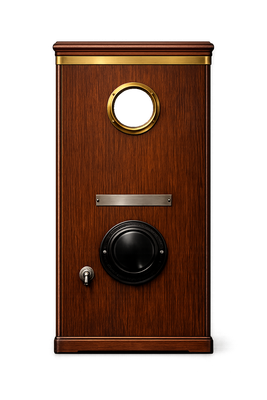
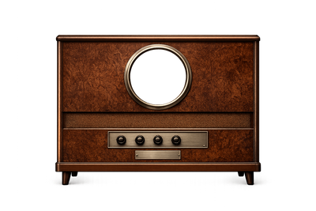
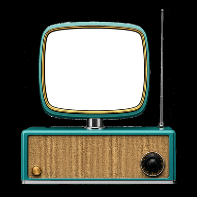
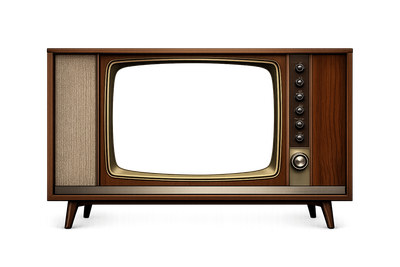
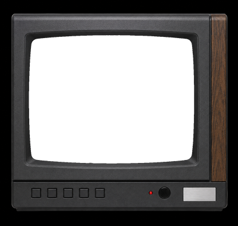
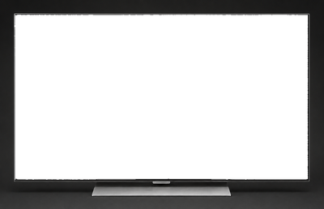

Six televisions, one century
Each era plays your video through the right signal model and CRT for that decade. Click a TV in the app's bottom timeline to switch.






Screenshots
Drop in your screenshots here.
Place files in /screenshots/ and reference them above.
What it does
Six eras, signal-accurate
From the 30-line mechanical scan of 1928 to the near-perfect picture of a 2024 OLED. Each era runs your video through a per-decade signal model (NTSC, VHS chroma, MPEG-2, passthrough) and a CRT display shader with the right scanlines, phosphor mask, beam glow and barrel curvature.
Photographic bezels
Each TV is a real photograph or render — the iconic Philco Predicta, a wood-cabinet console, a 1985 plastic cube, a near-frameless OLED. Your video plays inside the screen face with the correct aspect for each set.
Chronological timeline
Switch eras by clicking on a TV in a horizontal timeline at the bottom of the window. Markers sit on the years they belong to — not evenly spaced — so you see television's actual history.
Three sources, one menu
A side menu lets you scan local folders for movies, search the Internet Archive for vintage public-domain footage, or pick from your saved favourites. Click anything to add it as a channel.
Channel surfing
Drop in multiple videos and switch between them like real channels. Keyboard shortcuts, transition animation, relay-click sound effect. The channel number flashes briefly on screen.
Native Mac, Metal-fast
Built in Swift + SwiftUI, with the CRT pipeline running entirely on the GPU via Metal shaders. 60 fps even on M1, regardless of how heavy the era's effect chain is.